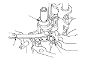
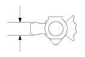

M/T Shift Arm Clearance Inspection
Measure the clearance between the shift arm (A) and shift piece (B) with a feeler gauge (C). If the clearance is more than the service limit, go to
Step 2
.
Standard:
0.26−0.57 mm (0.010−0.022 in.)
Service Limit:
0.75 mm (0.030 in.)

Measure the width of the shift arm.
If the width is not within the standard, replace the shift arm.
If the width is within the standard, replace the shift piece.
Standard:
13.58−13.79 mm (0.535−0.543 in.)
